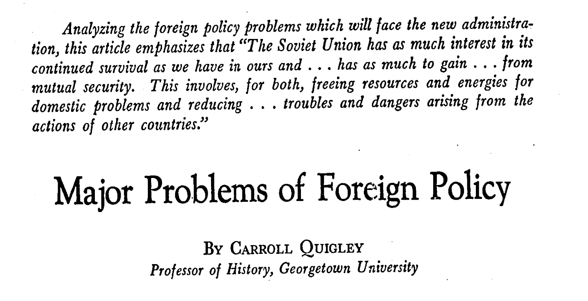

Major Problems of Foreign Policy [October 1968]
by Carroll Quigley

Original citation: Quigley, Carroll. “Major Problems of Foreign Policy” Current History 55: 326 (October 1968) 199–206; 240–42.
Analyzing the foreign policy problems which will face the new administration, this article emphasizes that “The Soviet Union has as much interest in its continued survival as we have in ours and … has as much to gain … from mutual security. This involves, for both, freeing resources and energies for domestic problems and reducing … troubles and dangers arising from the actions of other countries.”
Original citation: Quigley, Carroll. “Major Problems of Foreign Policy” Current History 55: 326 (October 1968) 199–206; 240–42.
Analyzing the foreign policy problems which will face the new administration, this article emphasizes that “The Soviet Union has as much interest in its continued survival as we have in ours and … has as much to gain … from mutual security. This involves, for both, freeing resources and energies for domestic problems and reducing … troubles and dangers arising from the actions of other countries.”
Jump to section within article:
The Inaugural Balls of January 20, 1969, will be well attended and the guests will dance as if they did not have a care in the world. After the balls are over, they will sleep without worry of a strategic thermonuclear attack, despite the fact that Soviet submarines are submerged a few hundred miles off our coasts with nuclear missiles targeted on our cities. These dangers and sleepers are not irresponsible in ignoring the nuclear threat. They are sure that the Soviet Union will not make a surprise strike on the United States as long as we are in a position to retaliate with a devastating counter-blow which would, in former Defense Secretary Robert McNamara’s phrase, end the existence of the Soviet Union “as a viable society.”
The rulers in the Kremlin also sleep at night without fear of a surprise American nuclear attack on the Soviet Union. They are sure that enough of their missiles would survive a surprise United States attack on them to permit a retaliatory strike of at least 200 rockets, sufficient to destroy the United States.
Thus, for the two superpowers, there is deterrence and relative security from one another. But there are two adverse developments.
From 1962 to about 1966, when most long-range missiles were land-based, the United States generally followed a “no-cities” target policy. That is, our missiles were targeted on enemy missile bases and military installations, in the hope that the Russians would do the same and that scores of millions of casualties would be avoided on both sides. This did have an adverse consequence, putting a nerve-wracking premium on making the first “preemptory” strike, since there would be no point in American missiles coming in on an enemy missile site after enemy missiles had taken off. But this disadvantage was never so bad as some “experts” believed, since there never was any real danger of either superpower making a first strike at the other. There still is no real likelihood of such a first strike, despite the horror stories spread by those who make a living from weapons sales or from professional anti-communism.
The second adverse consequence of mutual deterrence between the superpowers is of much more importance; in fact, international affairs on a world basis have been dominated by it. Because of their determination to avoid war with each other but to keep their basic enmity simmering for reasons of internal as well as external politics, the superpowers have encouraged third powers to be irresponsible. The United States has encouraged Nationalist China, the Soviet Union has encouraged the Arab states, and both have encouraged [not] insignificant parts of Vietnam, Korea, and Africa to make trouble. By reducing the superpowers’ influence, as powers, on the international scene, this has led to the fragmentation of the world and to the irresponsibility of these fragments—a situation which has now almost totally bankrupted the United Nations, except as a forum where anyone can say anything and not be held responsible.
This neutralization of the two superpowers in international affairs is the consequence of two developments: the fear of escalation of any conflict between them, and the efforts by both sides to compensate for the resulting loss of power by overemphasizing their ideological and other differences in order to bind their wavering allies and satellites more closely to their sides. The neutralization of the superpowers’ ability to resort to force encourages such drifting into neutralism. Here again, since both superpowers emphasize their antipathies for reasons of domestic political solidarity and for the private economic interests of groups and individuals who benefit from the domestic activities (such as armament expenditure, rapid military promotions, distortions of academic expenditures) arising from increased differences between the superpowers.
The neutralization and weakening of the superpowers in international affairs do not reduce but increase the danger of war, just as the weakening of the Habsburg and Ottoman Empires increased the danger of war before 1914. In the present case, danger arises from the superpowers’ unwillingness to use their strength even at a safe level (or on parallel paths) for fear that such actions might escalate into a collision between them on a nuclear level. This is clearly seen in the most critical areas of the world, Central Europe and the Near East.
The neutralization of the superpowers, with the resulting growth in independence and irresponsibility of lesser powers, is a dangerous development in international affairs, as long as the superpowers continue to nurse their mutual rivalries and enmities. Since no solution to the problem can be reached by the world dominance of either of them, a solution must be reached by a reduction of Soviet-American enmity based on the recognition, at least tacitly, that disturbance in the Near East, South Asia, the Far East, or even in Africa, Latin America or Indonesia, is of no real benefit to either and is potentially very dangerous to both. The ways in which Cuba, Egypt, Communist China and other countries can use the Soviet-American enmity to extort concessions from either or to blackmail both by threats to do business with the other are damaging to both and advantageous to neither.
The background for Soviet-American recognition of the realities of this situation rests in their realization that they have urgent domestic problems and that they face growing internal discontent from failure to deal with these problems because of the obsession—especially on the American side—with foreign problems which are often unreal and insoluble. These domestic problems are different in the two societies; still neither society can deal with its domestic problems as long as its government’s energies and resources are used in wasteful and largely needless armament and space races, ineffectual anti-ballistic missile systems, unenlightening propaganda warfare, or in supplying economic aid to conflicting groups in Vietnam, Korea, Nigeria, Indonesia, the Congo or Latin America.
Both superpowers must first of all recognize that economically “underdeveloped” countries are also politically underdeveloped in the sense that they are politically immature. Such countries are still organized politically on the basis of family, tribal or religious principles and have not yet reached the stage of the secular sovereign bureaucratic state. It is now increasingly apparent that the economic backwardness of much of the Third World is more a result of non-economic factors than of economic causes, and that political factors are among the more important of such non-economic causes. That the superpowers should allow political decisions affecting their own welfare and security to be influenced by politically immature peoples like the Syrians, the Congolese, or the Cypriots, simply because the Soviet and United States governments are enmeshed in a tangle of enmity, raises doubts as to the degree of political maturity in Moscow and Washington.
The Cold War
Reduction of Soviet-United States enmity, or liquidation of the Cold War, is the central problem for the new administration in the years 1969-1973. The Soviet Union is at present divided within itself as to whether it should increase its trouble-making for the United States throughout the world or turn independently to its domestic problems. Under John Foster Dulles, Secretary of State in the period 1953-1960, the United States set up a cordon of relatively meaningless treaties around the Soviet Union: NATO, CENTO, SEATO, ANZUS, and the Japanese-American Treaty of 1954 (revised in 1960). In this cordon, the two chief links were Turkey (in both NATO and CENTO) and Pakistan (in both CENTO and SEATO).
The meaninglessness of this system, which the State Department still pretends to be viable (although it never was) may be seen best in South Asia where the political reality today is not the existence of a barrier against communism running east and west, but the presence of a large cross which shows Pakistan aligned with Communist China and, balancing this, India aligned with the Soviet Union. This situation is based on the realities of the rivalries of the area, chiefly the Pakistani-Indian conflict over Kashmir and the Indian-Chinese conflict over Ladakh. Both of these, like the Soviet-Chinese tensions over Mongolia, have been ignored as real forces determining political alignments in their areas by a State Department still obsessed with a stale Dullesian anti-communism. As long as American foreign policy is based on such an unrealistic view of the world, it will be relatively easy for the Soviet Union to stir up problems for the United States all along the fringes of Asia with relatively little cost or danger to itself. The materials are lying ready, in Greece, in Cyprus, in the Near East, in all of South Asia, and in the Far East, to say nothing of Africa or Latin America.
Even if the United States closes its eyes to the fact that the policies of 1947-1962, based on anti-Communist and anti-Soviet clichés, are now obsolete, the need to seek new policies based on Soviet-American parallelism will be forced upon Americans by the inevitable spread of nuclear weaponry.
This is another matter on which the American people have been badly served by their government and the mass media. They have been alarmed by reports of Chinese nuclear explosions, and a so-called anti-Chinese anti-ballistic missile system has bene authorized by the Congress with an initial estimate of five billion dollars. But the final bill will be closer to fifty billion dollars; the system will be largely ineffectual as an ABM system; and there is no need for such a system against a nonexistent Chinese missile if there is no need for it against very real Soviet missiles.
The realities of this situation have been largely missed. The real threat to the United States from missiles does not come from those based on foreign soil, whose origin can be determined if they are fired, but from missiles from unknown submarines relatively close to American shores, whose origin will be totally indeterminable as soon as more than two powers have such submarines. Once three or more powers have missile submarines, the whole structure of mutual deterrence between the United States and the Soviet Union will collapse, since neither will be able to determine the origin of any missile which comes in at relatively short range from the ocean.
The situation will not arise next year, but the need to begin to face it will exist next year, as, indeed, it has already existed for at least two years.
The American public has been badly misled on the subject of nuclear weapons. The first error has been the belief that anybody’s security is increased by nuclear weapons or by any major breakthrough in weapons. Polaris missiles on submarines, which first made it necessary to return to city targeting when counter-targeting became impossible, will make mutual deterrence impossible as soon as several powers have them. Fortunately, we have also been misled in the double belief that obtaining nuclear warheads is difficult but that anyone can get a delivery system. The opposite is true. Obtaining nuclear weapons is easier and cheaper every year; up to 30 nations could produce them in the next decade if they made up their minds to do so. On the other hand, establishing a delivery system sophisticated enough to reach its target grows increasingly difficult every year, and it is doubtful, unless there is some totally unexpected new development in technology, if more than a few nations can produce a reliable vehicle for such warheads within the next decade.
Britain has been reduced to a third-rate power by her inability (and lack of will) to produce a delivery system for her warhead. President John Kennedy’s decision in December, 1962, cancelling development of the Skybolt delivery system for Britain as too expensive and uncertain was one of the turning points in modern British history, marking the doom of Harold Macmillan’s government and precipitating the veto by French President Charles de Gaulle on Britain’s entry into the Common Market. President Kennedy’s counter-offer of the Polaris missile, with only the plans for the nuclear submarine to carry it, still left a task too large for Britain’s will and resources.
The French decision, now almost a decade old, to obtain an independent nuclear force had as its ultimate goal four nuclear submarines, each with sixteen Polaris-type missiles. These were expected to become operational in 1970-1972, but the recent political difficulties in France, combined with the normal problems of development, have now pushed these dates at least two years further off. If France, with all her wealth, know-how, and will, has difficulties of this size in obtaining such armaments, it can be seen that the prospects are not good for nations like Communist China. But these problems are there and must be faced by the new administration in Washington. And they cannot be faced without a wholly new approach to United States foreign policy.
A New Foreign Policy
A new foreign policy must be based on recognition of certain principles:
- 1. The basic aim of American foreign policy must be the security of the United States.
- 2. The only state in a position to destroy or seriously injure the United States, now and in the foreseeable future, is the Soviet Union.
- 3. The Soviet Union has as much interest in its survival as we have in ours and, accordingly, has as much to gain as we have from mutual security. This involves, for both, freeing resources and energies for domestic problems and reducing, for both, troubles and dangers arising from the actions of other countries.
- 4. The nineteenth century idea that strategy should aim at creating a situation in which one’s own country could win in any future war with its most dangerous opponent has been made obsolete by the development of a technology of mutual annihilation. Accordingly, American policy now must be aimed at avoidance of war with the Soviet Union and at finding ways to counterbalance the Soviet Union on the landmass of Eurasia by other powers and by means other than nuclear weaponry, if possible.
- 5. These other means must be found under a continued Soviet-American mutual strategic deterrent, but they must involve a drastic reduction in American readiness to use its ground forces or its conventional weapons within the Old World landmass to prevent Soviet, Chinese, or any other aggressions in that area.
- 6. This fifth point can be achieved only if there can be created within the Old World landmass a balance of powers which is self-rectifying without any United States military or political intervention. This requires the presence in that area of several Powers with sufficient strength to be able to deter aggression on the ground in Eurasia but not so strong as to threaten any one of them with a danger of unprovoked aggression from a neighbor.
- 7. Specifically, this means that the Soviet Union must be faced with two other superpowers on the Eurasian landmass, each alone too weak to be a threat to the Soviet Union, but together in a position to deter any Soviet conventional aggression in the area. Moreover, it is much more important that the Soviet Union feel secure in the west (Europe) than in the east (China). In fact, if the Soviets felt more secure in Europe, Soviet forces would be moved from the European area to the Mongolian area, which would reduce the danger of any Soviet-encouraged instability in Europe or the Near East and would, at the same time, reduce the probability of any Chinese-sponsored instability in the Far East.
Nature of The Cold War
The detailed implementation of this balancing of forces on the Old World landmass must be based on a far more accurate view of Russia, its past history and the nature of the Cold War than is now generally available. There is not space here to provide this, but it is necessary to outline two new ways of looking at the Cold War, one historical and long-range; one in terms of power politics today.
Five hundred years ago, Asia had a fringe of old and obsolescent cultures along its mountainous backbone running west to east from the Balkans to Yunnan. Most of these were built on the alluvial fertility of the monsoon-fed rivers flowing from that mountain backbone to the surrounding seas. Politically, this Buffer Fringe of Asia was ruled by despotic empires and principalities from the Ottoman Empire in the west, across Persia, India and Malaysia, to China and Japan in the east.
By 1500, two new and vigorous civilizations were beginning to intrude into this Buffer Fringe. One of these, the Russian, pushed from the area between the Pripet Marshes and the Urals eastward over the North Asian grasslands and, by 1650, was crossing the Amur River into Chinese territory. The Treaty of Nerchinsk (1689) between Russia and China established the Amur as the Chief boundary between Chinese and Russian territory—as it still is—but the Russian pressure continued, pressing on the Buffer Fringe of Asia from the grasslands of the interior, constantly shifting the point of its pressure depending on the local resistance and the demands of internal problems within Russia. From 1770 until 1914, these pressures alternated between the Far East in Manchuria and the Near East in the Balkans.
During this same period, beginning with Vasco da Gama’s landing in India in 1498 and Ferdinand Magellan’s landing in the Philippines in 1520, a new civilization from Western Europe was also intruding into the Buffer Fringe from the seas.
Of these two pressures, the one continental and the other oceanic, the latter was much more intense and more destructive to the ancient cultures of the Buffer Fringe, damaging them almost irretrievably in the period from the British attack on China in 1842 to the Japanese copy of that attack in 1931. From 1914 to 1945, German aggressions both on the Oceanic states and on Russia relieved much of Asia from the double pressure of Russia and the West, as had also happened earlier for a brief interval from about 1680 to about 1760.
But any long-range view will show that the predicament of the Buffer Fringe between Western Oceanic pressures and Russian continental pressures is not new in the Cold War period but has been going on since at least 1500. Over that long period, the problem has remained about the same: Can the cultures of the Buffer Fringe of Asia, from Turkey to Japan, reform and strengthen themselves enough to resist these outside pressures? Or, if they do not, which of the two will dominate them and destroy them as viable cultures? These are the questions in 1968 as they were in 1500. But now, after more than four centuries of the destruction of indigenous communities, the West should finally consider the alternative of allowing these peoples to restructure themselves to become able to resist both alien cultures: Western individualism and Slavic totalitarianism.
A second, less long-range and perhaps less revealing way of looking at the Cold War is simply in terms of the power areas of the globe in the last 25 years. In 1943, an astronaut over the north pole looking down on the globe would have seen it divided into four conflicting quadrants, opposite pairs allied to each other, and each quadrant in conflict with both adjacent quadrants. The Oceanic Bloc of the English-speaking powers and the Fighting French was aligned with the opposite quadrant of the Continental Heartland of the Sino-Soviet Powers. (That is, the two intruders of the preceding paragraph were allied). These were in conflict with two transitory power blocs in the other two opposite quadrants, the Rome-Berlin Axis in Central Europe and Japan in the Far East. Two years later, in 1945, the two transitory power systems in the Far East and Central Europe had been liquidated and replaced by power vacuums in those areas. In each case, the power system which had contributed most to the liquidation of the transitory power system flowed most deeply into the resulting power vacuum area. That is, the United States, which contributed so much to the creation of the power vacuum in the Far East by the defeat of Japan, flowed deeply into the Far East, while the Soviet Union, which contributed so much to the creation of the power vacuum in Central Europe by the defeat of Germany, flowed deeply into Central Europe. These developments simply reflected the nature of political power. That beings so, they should have been anticipated. Arrangements should have been made in 1943 for filling the inevitable power vacuums in the two enemy quadrants, without the hypocrisy and recriminations of 1945-1947.
No agreements were possible in 1943 about the division of influence in the Far East and Central Europe in 1945 because only one of the three Allied leaders, Winston Churchill, would consider the problem, and another leader, Franklin Roosevelt, flatly rejected such a settlement. Instead, all three, led by Roosevelt, adopted the unrealistic idea that the coalition which was functioning to win the war would also rule the postwar peace as a system of “great power cooperation.” This was embodied in the Security Council of the United Nations, complete with a great power veto, such as had existed in the wartime coalition.
The difficulty with this was that the United States was apparently sincere in its belief that the postwar world could be governed through a continuance of the wartime cooperation, but the Soviet Union had a totally different, and very Asiatic, view of its aim in the postwar world. This aim was to obtain local power domination in its own area by surrounding itself with a cordon of subsidiary states, known for millennia in Chinese history as “tributary states,” and known to us in recent years as “satellite states.” The Soviet Union’s effort to establish such satellites on its borders, not only in the west, as in Poland, but also in the south, as in Iran, and in the east, as in Mongolia and northwestern China (although not in Manchuria) conflicted directly with the United States desire for great power cooperation (which had already been rejected in fact by United States conduct in Italy in 1943-1945). This conflict of aims was mistakenly interpreted by Washington as evidence of a Bolshevik plot to take over huge areas for communism. It was equally misinterpreted by the Kremlin as evidence of an assault by capitalistic imperialism on the workers’ paradise of Soviet Russia. Thus the Cold War was born—as most wars are—out of misunderstandings, ignorance and cross-purposes.
Cold War Settlement
These cross-purposes can be untangled even at this late date, and must be untangled fairly soon, if we are to survive. An indication of the outlines of such a settlement can be described working from west to east across the Eurasian landmass.
In the west a superpower should be sought in Western Europe. This must include both West Germany and Great Britain, must have nuclear weapons, and must be completely independent of both the Soviet Union and the United States. The Soviet Union will feel secure in the west, with a European Union possessing nuclear weapons, only if this union is not allied to the United States, only if Germany is not united in it, and only if the buffer of neutral and satellite states, including East Germany and Poland, continues.
The United States is legally committed to the reunification of Germany. Yet a unified Germany in Central Europe would be a great threat to the stability and, accordingly, the peace of Europe. It would recreate the conditions which led to war in 1914 and 1939 and would create these in a most precarious form, with a great nuclear power balanced in the center of Europe, spreading insecurity in all directions and exposing that area to sudden war if such a united Germany ever showed an inclination to lean to either the east or the west. On the other hand, a divided Germany, with the two halves aligned to the two parts of Europe, would constitute a force for peace by making the area one of conciliation rather than of animosity, for any conflict between the two parts of Europe would imply a conflict of Germans with Germans. And without being vindictive, a permanently divided Germany would show that the price of aggression is not always success.
The West European system, whatever form it takes, must contain Britain, freed from any special relationship with the United States. This requirement does not depend on de Gaulle’s insistence but on the facts: (1) that a West Europe without Britain would not be strong enough to stand up to the Soviet Union without United States support; (2) that the lesser states of the West, such as Denmark or Benelux, are not willing to be in any close political arrangement with Germany (even only West Germany) unless Britain is a partner, because they do not completely trust Germany; and (3) that the special relationship with the United States has been a source of great injury to Britain, especially in recent years and under the last three British governments, hampering her ability to get to her real economic problems and her real political interests because of the need to be a tail on the American kite.
The Soviet Union, in view of its other problems and interests, could be contained in the west by such a West European arrangement and would, at the same time, not feel insecure in the west. It could, thus, turn its attention to the Far East, rather than the Near East.
In the Far East, according to the exaggerated United States view, the problem is a belligerent Communist China. Indeed, many in the State Department regard China as our chief enemy, despite the fact that China at present is weak and divided and is not growing noticeably stronger. The trouble in the Far East is not China’s strength but rather her weakness.
The point is that, whatever China’s strength may be, it can be countered in only two ways: by a strategic threat to China’s territory or by local direct pressure on China’s frontier. The strategic threat is weakened, not only by our general reluctance to use strategic weapons, especially when China is still allied, at least technically, to the Soviet Union, but also by the fact that China’s size, low level of industrialization, and very decentralized condition make her an unfruitful target for nuclear weapons. Chemical and bacteriological weapons, especially those aimed at Chinese food crops, would be considerably more productive and more humane, but almost certainly could not be used by us (at least before strategic nuclear weapons) because of the general lack of sound information and clear thinking on these matters in the United States and throughout the world. In any case, any strategic attack on China would be needless and unproductive, because China’s power, and even her aims, offer no immediate threat to American security.
This situation would also rule out any conventional United States attack on China, either directly or through Nationalist China, from Taiwan, Okinawa, and the sea. If it is necessary to contain China as an expansionist force on the Asia mainland, this must be done along her most vulnerable land frontier, the open grasslands of Mongolia; the pressure to restrain Chinese expansion, if and when it threatens, must be exercised by the Soviet Union.
The Soviet Union will do this if it is left free to do so, and it can do so by day-by-day increase of Soviet influence in Outer Mongolia as well as the growth of Soviet population, industry and military strength in the Soviet areas of east Asia. This process is already going on. In January, 1966, as a very pointed symbol of this process, the Soviet Union signed a mutual assistance pact with the Mongolian Republic. It is of some significance that the United States has no diplomatic relations with the Mongolian Republic, although the latter has been a member of the United Nations since October, 1961. It is perhaps not irrelevant that the greatest American authority on Mongolia, Professor Owen Lattimore of the Johns Hopkins University (now at University of Leeds, England), has been persona non grata to our State Department since he was attacked by Senator Joseph McCarthy of Wisconsin in 1950 as “the top Russian espionage agent” in the United States. Yet it is difficult for anyone to claim that “Red Chinese expansion” can be curbed more successfully by United States action in the jungles of southeast Asia than by Soviet pressures along China’s longest and most exposed land frontier.
The Chinese Missile Threat?
Another aspect of this problem is contingent on the possible Chinese missile of the relatively distant future. As has been indicated, the Chinese can ultimately produce a few ICBM’s, if they are determined to do so, but the date of that achievement would be delayed by any need to divert technicians and resources to the manufacture of equipment for ground forces along the Soviet and Mongolian frontiers. It is not clear what targets in the United States would be used for the first few such long-range missiles when the Chinese do obtain them, and it is obvious that the Chinese would have to get hundreds of them to be any real threat to the United States. Furthermore, it does not appear clear how even large numbers of Chinese ICBM’s would ever become as great a danger to the United States as the Soviet ICBM’s have been for years.
In other words, the burden of proof must rest on anyone who sees a major threat to the United States from Chinese ground-based nuclear missiles and advocates any substantial changes in the United States strategic defense posture because of these. Without such proof, expenditures for items like the present tentative anti-ballistic missile system are more likely to be grants of public funds to the “military-industrial complex” than any real contribution to defense.
Furthermore, it is almost certain that the Chinese will have missiles in the 3,000-mile range before they have any in the almost 7,000-mile range needed to reach any worthwhile target in the United States from any likely missile sites in China. But such 3,000-mile missiles will be a direct threat to the Soviet Union and to Japan long before missiles of twice that range can threaten targets like San Francisco and Seattle or Minuteman missile sites in Montana. Thus Russia and Japan must begin to take steps to protect themselves against Chinese missiles and must begin to cooperate in doing so long before the United States is threatened by Chinese land-based missiles. In addition, if the Chinese can leap-frog over the stage of ground-based missiles to achieve the more difficult stage of submarine-based missiles, the Soviet Union must cooperate with the United States in the control of such Chinese submarines in the Pacific and Arctic Oceans if the Soviet-American mutual deterrence is to be preserved.
In a discussion such as this, based on future capabilities, there is little need for any extended discussion of Chinese or Soviet intentions. It has been an established principle of strategic studies for generations that strategic decisions seeking security must be based on the capabilities rather than the intentions of any potential enemy. In fact, it is capability rather than intention which makes a state an “enemy.”
Chinese intentions are probably not very different from Soviet intentions and are confined within similar parameters. The Chinese face internal problems far greater than those of the Soviet Union and need security to deal with their problems, which include closing the gap between food supply and population increase the problems of increasing industrial production and additional nonagricultural jobs and, above all, the problems of political stability, political succession, and securing allegiance from a large and diverse population. Like the Soviet Union, China sees security in terms of being the center of a planetary system of satellite states; she sees prestige in terms of leadership of a world-wide Communist ideological bloc. Both of these ambitions bring the Soviet Union and China directly into collision with each other and only indirectly into collision with the United States, which has no frontier with either of them (as they have with each other). In fact, any concentration by the United States on its security will lead to a relaxation of United States pressures around the world on other issues and will simultaneously result in an increase in Sino-Soviet alienation.
The problem of stability in the Near East is now merging with the problems of security in all South Asia, as a consequence of the withdraw of British influence east of Suez, the breakdown of the Dulles arrangements in South Asia, and the blockage of the Suez Canal.
In South Asia, the basic reality, not yet accepted or perhaps not even recognized in our State Department, is what I have referred to as the “cross alignment” of Pakistan-China versus Indo-Soviet power in that area. This might be called “the Southern Cross” in international politics although the survivors of the Dulles era might prefer to call it “the Southern Double-Cross”
To understand the reality, we must get away from the Oceanic view of Asia, which we inherited from Britain, and look at Asia from the Russian continental point of view, which was utilized by some British, such as Lord Curzon, in the nineteenth century. Curzon, whose point of view was either a generation too late or a generation too early, looked at Asia from the Pamirs. I would hardly advise this today, but just as the Far East must be regarded equally from the Pacific and Mongolia, so South Asia must be regarded from the Indian Ocean and Kashmir. Moreover, in both places, treaties on paper are much less significant than tacit understandings and half-hidden signals based on the realities of power balances on the spot.
The withdrawal of Britain from the Indian Ocean leaves a power vacuum all the way from Indonesia to the Red Sea, and most acutely in the Arabian Sea and Persian Gulf. It occurred just as Soviet ships and submarines were beginning to come into the area and just as their access there was cut off from their Black Sea bases and made totally dependent on their Far East bases by the closing of the Suez Canal. This is advantageous to the United States; it blocks the Soviet western sea forces in the Mediterranean, whence they can emerge only via Gibraltar, an area much closer to our power than the Red Sea is ever likely to be.
Accordingly, we should make no real effort to open the Canal, since its closure makes any Soviet request for a base at a place like Aden or in the Persian Gulf very remote. The sheikdoms of these areas feel very naked in the wake of the British withdrawal, just as Malaysia does at the other end of Asia. Recently, there have been rumors of Soviet requests for bases in both areas. The United States should do what it can to oppose such bases, without committing itself to action on the Asia mainland. But an increased United States presence in the Indian Ocean, with intermediate bases in Australia, New Zealand, possibly somewhere in South Africa, and perhaps elsewhere in the Indian Ocean, would reassure those who have been most disturbed by the British withdrawal.
In the Near East itself, the situation is so bad that stability seems almost unobtainable. But certain basic facts are clear. Arab culture is so disrupted and corrupt that no stability, progress or even agreement is possible, except unconstructive temporary alignments based on joint hatreds. On the other hand, the area also includes three of the world’s greatest fighting peoples, the Ethiopians, the Turks and the Israelis. Some kind of an alignment of the United States with these three to work for the political, economic and social reconstruction of the whole Near East, with any Arab groups or states welcome to participate in the effort, might make life there sufficiently hopeful in a very uncertain future to keep the Soviet Union out.
Along these lines, some stability might be achieved without the exhaustion of United States wealth and energies in the chief parts of the Old World landmass. On that land mass, the chief structure would be a balance of China, Pakistan and a remote West Europe, balanced by Japan, India and the Soviet Union. The United States would have commitments to Australia, New Zealand, and probably Japan in the east, to Ethiopia, Israel, Turkey, and possibly Iran in the west. Indonesia, Southeast Asia, the Arab states and Black Africa would be largely unaligned with the Soviet Union and the United States following mutually self-denying policies of parallel aid, reducing the supply of weapons to them (if the weapons salesmen who are so influential in American foreign policy can be restrained), with a possible joint aid program under the administration of the United Nations or of some of the smaller nations.
What would that leave to occupy the resources and energies of Americans? A number of gigantic problems, beginning with our almost insoluble domestic problems. After these will come the equally huge problems of Latin America, to avoid, if possible, the outburst of guerrilla revolutionary activities in that area like the Vietcong in Southeast Asia. There will also remain another large puzzle: namely, how to control the Oceanic world as we have inherited it from the British but with all the new complexities of a thermonuclear, electronic, computerized age of psychological brainwashing and biological chemicals, which already seem beyond our powers to handle.
However securely Americans may sleep, following the Inaugural Balls of January 20, 1969, the problems of American foreign policy must be faced eventually by the new administration. They cannot be faced merely by tinkering with old policies, which must be replaced by a fundamental reappraisal of the United States basic needs and priorities in the foreign field. The basic American need is security, as it is in every country; this must be given priority. The chief obstacles to such a reassessment will be the inertia of the present erroneous policy in Vietnam, our almost equally mistaken foreign financial and economic policies, and the sudden upsurge of domestic problems. There is little doubt that the Vietnamese War will be de-escalated no matter who is inaugurated in January, simply because of the drift of American public opinion. How this can or should be done is too large an issue to be discussed here.
Our foreign financial policies and all our teeming domestic problems are even more complex. The administration in Washington in 1969-1973 must place these in the same framework of strategic priorities as our national security. Without national security they have little meaning, but their relations with this basic concern and with each other are interlocking. All of these problems must be fitted together in the context of the power realities of the globe.*
Carroll Quigley, a Contributing Editor of Current History, has served as a consultant to NASA and to the U.S. Navy. He is the author of Evolution of Civilizations (New York: Macmillan, 1961), and Tragedy and Hope: The World in Our Time (New York: Macmillan, 1965).
*Note [original, as printed]: More detailed information on the background of this discussion may be found in the following: Carroll Quigley, The World Since 1939: A History (New York: Collier Books, 1968); Alastair Lamb, Asian Frontiers, Studies in a Continuing Problem (London: Pall Mall Press, 1968); Theodore Draper, Abuse of Power (New York: Viking, 1967); David Kraslow and Stuart Loory, The Secret Search for Peace in Vietnam (New York: Random House, 1968).